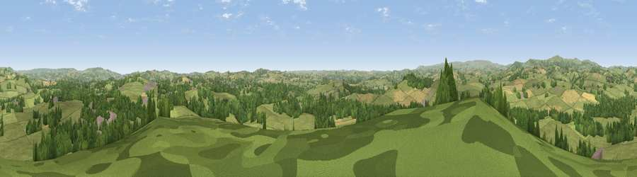

Viewpoint near Denbury
#13599 in England · top 29% of its area beats it · near Denbury · access?Where it is
The exact computed spot (SX 81675 68525). Click the marker for map links.
Public access: no public right of way or access land is recorded at this exact spot — it may be on private land. Computed from Natural England's CRoW access layer and OpenStreetMap rights of way — not the legal definitive map. Always verify locally.
The view, rendered

A 360° render of this exact spot computed from the terrain model, tree cover and land cover — summer colours, afternoon light, calibrated against photographs of famous viewpoints. Real trees, hedges and buildings will differ in detail.
The panorama
Grey silhouette: terrain skyline in each direction (720 bearings, Earth curvature and refraction included). Dashed green: skyline with trees (+15 m) and buildings (+8 m) as obstacles. Blue strip: how far the ground is visible on each bearing.
Where the view opens
Wedge length = distance to the farthest visible ground on that bearing (vegetation-aware). Rings at 10, 25 and 50 km.
What fills the view
66% grassland · 24% woodland · 7% cropland · 3% built-up
Angular shares of the visible panorama (visual magnitude), not map area. Landscape diversity 0.40 (0–1 Shannon).
Key numbers
More beautiful places nearby
The staircase of upgrades: each row has a higher view potential than everything closer. Driving times are estimates from straight-line distance, calibrated against real road routing — check an actual route before setting out.
| Place | Direction | Drive | Score |
|---|---|---|---|
| Viewpoint near Broadhempston | SW · 2 km | ~5 min | 61.4 |
| Telegraph Hill | NNW · 5 km | ~10 min | 69.6 |
| Viewpoint near South Knighton | N · 5 km | ~11 min | 69.9 |
| Viewpoint near Marldon | ESE · 7 km | ~15 min | 72.3 |
| Viewpoint near Berry Pomeroy | SSE · 8 km | ~16 min | 76.6 |
| Beacon Hill | SSE · 8 km | ~16 min | 82.3 |
| Viewpoint near Stokeinteignhead | E · 11 km | ~21 min | 84.1 |
| Viewpoint near Hope | SSW · 33 km | ~50 min | 84.4 |
50.50453, -3.66992 · source: screening · position refined by local search. Computed location — check access rights before visiting.